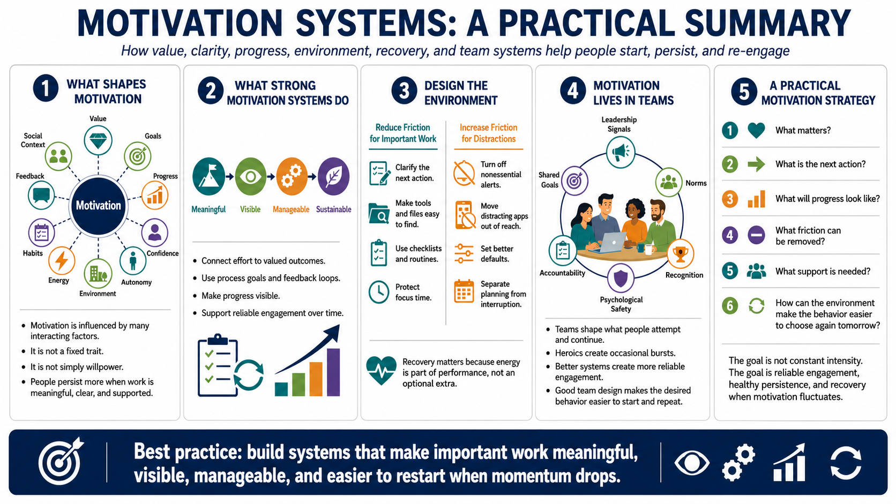

Course Summary and Key Takeaways
Connecting to LMS... Progress: in progress

Narration
Motivation is influenced by value, goals, progress, confidence, autonomy, environment, energy, habits, feedback, and social context. It is not a fixed trait and it is not simply willpower. People are more likely to start and persist when the work is meaningful, the next step is clear, progress is visible, and the environment supports the behavior instead of fighting it.
Strong motivation systems make important work meaningful, visible, manageable, and sustainable. They connect effort to valued outcomes. They use process goals and feedback loops to support progress. They reduce friction for important behaviors and increase friction for distractions. They support recovery because energy is part of performance, not an optional extra.
Motivation also lives in teams. Leadership signals, norms, recognition, accountability, psychological safety, and shared goals shape what people are willing to attempt and continue. Teams that rely on heroics may get occasional bursts of effort, but teams that design better systems create more reliable engagement. Good systems make the desired behavior easier to start, easier to repeat, and easier to recover when momentum drops.
The goal is not constant intensity. The goal is reliable engagement, healthy persistence, and systems that help people keep moving when motivation naturally fluctuates. A practical motivation strategy asks what matters, what the next action is, what progress will look like, what friction can be removed, what support is needed, and how the environment can make the important behavior easier to choose again tomorrow.